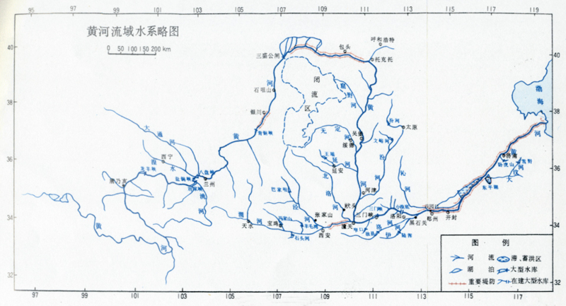

軽空母・龍驤の名前の由来
執筆日時：
昨日、横須賀のヴェルニー公園にも寄ってきた（軍艦長門碑・軍艦山城之碑） - だるろぐ を書いていて、ふと思った。
「蒼龍」だの「飛龍」だのは今のひとでも多分思いつくだろうけれど、現代では「驤」ってあまり使わないし、たとえ読めたとしても意味わかんない人が多いだろう。ましてや名前に付けるなんて、思いつくだろうか。
そんなわけで、ちょっちがんばって調べてみた。
まずはとりあえず、「驤」の意味を『漢字源』で――いってみよう！
- ［動］あがる。あげる（あぐ）。馬が首をたてて走る。転じて、高くあがる
- ［動］馬がからだをくねらせかきわけて進む。「騰驤」
- ［名］後ろの足が白い馬
会意兼形声。「馬＋襄（ジョウ。すきまに入りこむ、あがる、のぼる）」
どうやら、龍が雲のあいだをうねうねとのぼっていく様子を指すようだ。（あかん、ウチの名前、ホンマかっこええわぁ！）
『後漢書』呉蓋陳臧列伝（呉漢、蓋延、陳俊、臧宮、いずれも光武帝時代のひとの伝記）では、このように使われている（訳には自信がない）。
贊曰：吳公鷙彊，實為龍驤。電埽群孽，風行巴、梁。虎牙猛力，功立睢陽。宮、俊休休，是亦鷹揚。
後代の評価：呉漢はとにかく勇猛で、すべてを龍が天に駆け上がるかのような調子でやってのけた。群がる匪賊を稲妻のように一掃し、巴（蜀の奥）・梁（魏）の地を風が吹くかのごとく瞬く間に制覇した。（蓋延は？）虎のような牙と力をもち、睢陽では抜群の功績を経てた。一方、臧宮や陳俊のほうは（もちろん将としては一級であったが呉・蓋の二将とは異なり）のんびりしており、小さなことにこだわらずゆったりした感じであった。
また、『後漢書』竇何列傳にはこのようにある。
紹等又為畫策，多召四方猛將及諸豪傑，使並引兵向京城，以脅太后。進然之。主簿陳琳入諫曰：「易稱『即鹿無虞』，諺有『掩目捕雀』。夫微物尚不可欺以得志，況國之大事，其可以詐立乎？今將軍總皇威，握兵要，龍驤虎步，高下在心，此猶鼓洪爐燎毛髮耳。夫違經合道，天人所順，而反委釋利器，更徵外助。大兵聚會，彊者為雄，所謂倒持干戈，授人以柄，功必不成，秖為亂階。」進不聽。遂西召前將軍董卓屯關中上林苑，又使府掾太山王匡東發其郡強弩，并召東郡太守橋瑁屯城皋，使武猛都尉丁原燒孟津，火照城中，皆以誅宦官為言。太后猶不從。
これは三国志の最初の辺りで、何進が宦官と対立しているときの話。袁紹が「中国中から英雄豪傑を集めて、宦官側に立っている太后を締め上げちまおうゼ」と献策すると、陳琳がこう反論した。
「はぁ？ 『易経』で『即鹿無虞*1』とか、諺で『目をおおって雀を捕る』とか言いますよね？ しょうもないものでも志を得ずに詐術をもって奪おうとすれば失敗します。国の大事ならばなおさら、なぜセコいマネをなさるのです？ 何進将軍は皇帝の信頼第一で、朝廷も軍隊も手中に収めています。まさに龍が雲に上るがごとく、虎が野を闊歩するかのごとく、上の者から下の者まで心腹しています。それでも髪の毛を焼くのにオーブンを引っ張り出すような真似をなさるのですか？ （絶対失敗するに決まってんだろクソが！ 以下略）」
そのほかにも
「驤」は馬が躍り上がることで、「龍驤」は、龍が天に昇ることを言い表した言葉です。
「龍驤虎歩」(『後漢書』)、「龍驤虎視」(『三国志』)、「龍驤麟振」(『晉書』) などの用例があります。
なんてつかわれ方をしているのだそうな。
たとえば『魏志』武帝紀（曹操の伝記）。
君龍驤虎視，旁眺八維，掩討逆節，折衝四海，是用錫君彤弓一，彤矢百，玈弓十，玈矢千。君以溫恭為基，孝友為德，明允篤誠，感于朕思，是用錫君秬鬯一卣，珪瓚副焉。魏國置丞相已下羣卿百寮，皆如漢初諸侯王之制。往欽哉，敬服朕命！簡恤爾衆，時亮庶功，用終爾顯德，對揚我高祖之休命！
韓遂、宋建，南結巴、蜀，羣逆合從，圖危社稷，君復命將，龍驤虎奮，梟其元首，屠其窟栖。曁至西征，陽平之役，親擐甲冑，深入險阻，芟夷蝥賊，殄其兇醜，盪定西陲，懸旌萬里，聲教遠振，寧我區宇。
その他多数。
結構あちこちで使われていて、当時では勢いがあるモノを表したり、偉い人を褒めるときの形容語として身近だったのかもしれない（ほめて、ほめてぇ！）。呉には龍驤将軍という位もあったのかな？ 王濬・呉隠という人名とともに何回か出てきている。あと、黄河が（下流から見て）北へ折れる様子を“龍驤”と表現することもあったみたい。確かに、龍が天に昇っているように見えるといえば見える。

*1:卦の一つ。今は準備が整っていないので焦って鹿を追いかけても無駄、みたいな占い結果